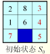
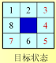
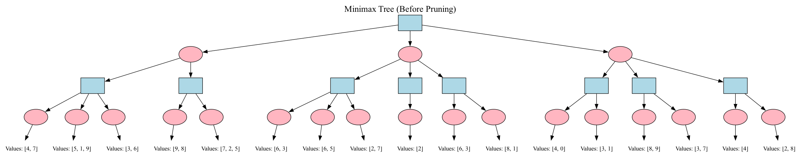

搜索技术总结
课程信息
- 课程名称： 人工智能（专业必修）
- 授课对象： 计算机科学与技术专业 二年级
- 课程学分： 3学分
- 核心内容： 第四章 搜索技术 (I, II, III)
一、搜索技术概览 (Search Technology I)
搜索是人工智能中解决问题的一种基本方法。许多问题，尤其那些没有特定解决算法的问题，都可以通过将其转化为搜索问题来求解。
1.1 搜索可以解决的问题
- 问题求解 (Problem solving by search): 许多AI问题可以通过搜索找到解决方案。
- 游戏策略: 搜索在游戏AI（如棋类游戏）中取得了显著成果。
- 其他AI问题: 机器人路径规划、自然语言处理、机器学习等领域也有应用。
搜索的本质：假设推理
搜索过程可以看作是一种假设推理，它涉及到回答以下问题： 1. 我在哪？ (What state am I?) - 当前的状态或资源。 2. 我能干吗？ (What actions can I take?) - 可以执行的操作，如星际争霸中的防守、建造、攻击。 3. 我到哪里去？ (What state should I achieve?) - 目标状态，如击败对手。 通过这种推理，我们可以规划出一系列动作来达到期望的状态。
1.2 搜索问题的形式化定义
要使用搜索算法解决问题，首先需要对问题进行形式化定义。这包括以下几个关键组成部分：
形式化定义要素
- 状态空间 (State Space): 对问题所有可能状态的集合的形式化表示。
- 动作 (Action): 从一个状态转移到另一个状态的操作的形式化表示。
- 初始状态 (Initial State): 代理（agent）开始时的状态。
- 目标 (Goal): 期望达到的一个或多个状态的描述。可以通过一个目标测试 (Goal Test) 函数来判断当前状态是否为目标状态。
- 解 (Solution): 从初始状态到目标状态的一个动作序列。
- 前进成本 (Path Cost): 从状态 \(x\) 通过动作 \(a\) 到达状态 \(y\) 所需的成本，记为 \(C(x, a, y)\)。如果 \(y\) 无法从 \(x\) 通过 \(a\) 到达，则成本为 \(\infty\)。
- 启发式方法 (Heuristics): (将在后续讨论) 用于指导搜索方向的额外知识。
注意
搜索只展示了如何在问题被正确形式化之后如何解决它。问题的正确表述至关重要。
后继函数 (Successor Function):
一个状态 \(x\) 经过一个动作后可以到达的状态集合 \(S(x)\)。
由于一个状态可能通过不同动作到达不同后继，或通过不同动作到达相同后继，后继函数通常返回 <状态, 动作> 对的集合，例如 \(S(x) = \{\langle y, a \rangle, \langle z, b \rangle\}\)。
示例1：罗马尼亚路径规划
- 问题: 从 Arad 到 Bucharest，尽快到达。
- 状态空间: 罗马尼亚境内的任一城市。
- 动作: 在相邻城市之间移动。
- 初始状态: 在 Arad。
- 目标状态: 在 Bucharest。
- 解: 从 Arad 到 Bucharest 途径的城市序列。
示例2：倒水问题 (Water Jug Problem)
- 问题: 有一个3加仑的壶和一个4加仑的壶，如何精确量出特定量的水（例如，4加仑壶中有2加仑水）？
- 状态空间:
(gal3, gal4)对，表示两个壶中水的加仑数。例如 (0,0), (3,4)。 - 动作:
Empty-3-Gallon,Empty-4-GallonFill-3-Gallon,Fill-4-GallonPour-3-into-4,Pour-4-into-3
- 初始状态: 例如 (0,0)。
- 目标状态: 例如 (x,2) 或 (1,3)。
示例3：八数码难题 (8-Puzzle Problem)
- 问题: 将打乱的数字方格恢复到目标排列。
- 状态空间: 各种不同的方格摆放方式。
- 初始状态: 给定的初始方格摆放。
- 目标状态: 目标方格摆放。
- 动作: 向上/下/左/右移动空格。
- 八数码问题属于滑块难题，是二维组合谜题。魔方是三维组合谜题。
示例4：吸尘器世界 (Vacuum Cleaner World)
- 问题描述: 吸尘器清扫两个房间，每个房间可能是干净或不干净的。吸尘器有向左、向右、吸尘动作。
- 物理状态: 描述了世界的确切状态，例如
(吸尘器位置, A房状态, B房状态)。共有 \(2 \times 2^2 = 8\) 种物理状态。 - 认知状态 (Knowledge State): 智能体对世界状态的认知。它可能是物理状态的一个子集。例如，智能体知道自己在几个物理状态之一，但不确定是哪一个。
- 目标: 所有房间都干净。
- 初始认知状态 (完全不清楚): {1,2,3,4,5,6,7,8} (所有8个物理状态的集合)
- 一个动作序列如
<right, suck, left, suck>可以保证达到目标，无论初始物理状态是哪个。- {1,2,3,4,5,6,7,8} \(\xrightarrow{right}\) {2,4,6,8} \(\xrightarrow{suck}\) {4,8} \(\xrightarrow{left}\) {3,7} \(\xrightarrow{suck}\) {7}
- 状态7代表 (吸尘器在A房, A房干净, B房干净)。
1.3 搜索过程：树搜索与图搜索
- 边界 (Frontier / Open List): 存储已生成但尚未扩展（探索）的节点的集合。初始时，边界只包含初始状态。
- 已扩展节点 (Explored Set / Closed List): 存储已经被扩展过的节点的集合。
树搜索 (Tree Search):
- 将初始状态放入边界。
-
循环：
a. 如果边界为空，则失败。
b. 从边界中选择一个节点 \(n\) 进行扩展。
c. 如果 \(n\) 是目标状态，则返回从初始状态到 \(n\) 的路径。
d. 将 \(n\) 的所有子节点（后继节点）加入边界。
图搜索 (Graph Search):
与树搜索类似，但会维护一个“已探索”集合，避免重复扩展已访问过的状态，从而处理状态空间图中的环路。
- 将初始状态放入边界，已探索集合为空。
-
循环：
a. 如果边界为空，则失败。
b. 从边界中选择一个节点 \(n\) 进行扩展，并将其移出边界，加入已探索集合。
c. 对于 \(n\) 的每个子节点 \(c\): i. 如果 \(c\) 不在已探索集合中，也不在边界中，则如果 \(c\) 是目标状态，返回路径，否则将 \(c\) 加入边界。 ii. (对于某些算法如UCS/A*) 如果 \(c\) 在边界中但新的路径更优，则替换边界中的旧节点。
路径 vs. 状态
在某些搜索问题（如路径规划）中，边界存储的是到达某个状态的路径，而不仅仅是状态本身。这对于计算路径成本和处理循环很重要。
1.4 搜索算法的评价标准
评价标准
- 完备性 (Completeness): 如果问题存在解，算法是否总能找到解？
- 最优性 (Optimality): 算法是否总能找到成本最低的解（当动作有成本时）？
- 时间复杂度 (Time Complexity): 找到解最多需要探索/生成多少个节点？通常用 \(b\) (最大分支因子) 和 \(d\) (最浅目标节点深度) 或 \(m\) (状态空间最大深度) 表示。
- 空间复杂度 (Space Complexity): 算法最多需要将多少个节点储存在内存中？
从边界选择节点的顺序对搜索的性能有至关重要的影响。
二、无信息搜索 (Uninformed Search)
无信息搜索（也称盲目搜索）策略不使用任何关于问题领域特定知识（如距离目标的远近估计）。它们仅按照固定的规则选择下一个要扩展的状态。
2.1 宽度优先搜索 (Breadth-First Search, BFS)
- 策略: 总是扩展边界中最浅的未扩展节点。这可以通过将新生成的子节点添加到边界的末尾（FIFO队列）来实现。
- 过程: 逐层探索搜索树。先探索深度为0的节点，然后是深度为1的节点，以此类推。
- 属性:
- 完备性: 是 (如果 \(b\) 是有限的)。
- 最优性: 是 (如果所有动作成本相同)。
- 时间复杂度: \(O(b^d)\) (最坏情况需要生成到 \(d+1\) 层部分节点，即 \(1+b+b^2+...+b^d + b(b^d-1)\))。
- 空间复杂度: \(O(b^d)\) (需要存储边界中的所有节点)。
- 缺点: 空间复杂度是主要瓶颈。
示例：倒水问题 (BFS)
初始状态 (0,0)，目标状态 (*,2)。
- Frontier = {<(0,0)>}
- Expand (0,0) -> (3,0), (0,4). Frontier = {<(0,0),(3,0)>, <(0,0),(0,4)>}
- Expand (3,0) -> (0,0), (3,4), (0,3). Frontier = {<(0,0),(0,4)>, <(0,0),(3,0),(0,0)>, <(0,0),(3,0),(3,4)>, <(0,0),(3,0),(0,3)>} (假设 (0,0)是路径的第一个元素) ... 如果找到目标 (x,2)，则停止。
2.2 一致代价搜索 (Uniform-Cost Search, UCS)
- 策略: 总是扩展从初始状态到当前节点路径成本 \(g(n)\) 最低的未扩展节点。这通常用优先队列实现。
- 过程: 类似于BFS，但不是扩展最浅的节点，而是扩展路径成本最低的节点。
- 属性:
- 完备性: 是 (如果动作成本 \(\epsilon > 0\) 且 \(b\) 有限)。
- 最优性: 是。
- 时间复杂度: \(O(b^{1+\lfloor C^*/\epsilon \rfloor})\)，其中 \(C^*\) 是最优解的成本，\(\epsilon\) 是最小动作成本。
- 空间复杂度: \(O(b^{1+\lfloor C^*/\epsilon \rfloor})\)。
- 注意: 如果所有动作成本相同，UCS 等价于 BFS。
2.3 深度优先搜索 (Depth-First Search, DFS)
- 策略: 总是扩展边界中最深的未扩展节点。这可以通过将新生成的子节点添加到边界的最前端（LIFO栈）来实现。
- 过程: 沿着一条路径尽可能深地探索，直到达到叶节点或无法再扩展，然后回溯到上一个未完全探索的节点。
- 属性:
- 完备性: 否 (在无限深或有环路的状态空间中可能陷入死循环)。是 (在有限状态空间且进行环路检测时)。
- 最优性: 否 (找到的第一个解不一定是最优的)。
- 时间复杂度: \(O(b^m)\)，其中 \(m\) 是状态空间的最大深度（可能远大于 \(d\)）。
- 空间复杂度: \(O(bm)\) (只需要存储当前路径上的节点及其兄弟节点，线性空间复杂度是其主要优点)。
示例：倒水问题 (DFS)
初始状态 (0,0)，目标状态 (*,2)。
- Frontier = {<(0,0)>}
- Expand (0,0) -> (3,0), (0,4). Frontier = {<(0,0),(3,0)>, <(0,0),(0,4)>} (假设(3,0)在前面)
- Expand (3,0) -> (0,0), (3,4), (0,3). Frontier = {<(0,0),(3,0),(0,0)>, <(0,0),(3,0),(3,4)>, <(0,0),(3,0),(0,3)>, <(0,0),(0,4)>} ...
2.4 深度受限搜索 (Depth-Limited Search, DLS)
- 策略: DFS，但预先设定一个最大搜索深度 \(L\)。深度超过 \(L\) 的节点不予扩展。
- 属性:
- 完备性: 否 (如果最浅目标深度 \(d > L\))。是 (如果 \(d \le L\))。
- 最优性: 否。
- 时间复杂度: \(O(b^L)\)。
- 空间复杂度: \(O(bL)\)。
2.5 迭代加深搜索 (Iterative Deepening Search, IDS)
- 策略: 结合了BFS的完备性/最优性（成本相同时）和DFS的空间优势。它通过多次执行DLS，深度限制 \(L\) 从0开始逐步增加（0, 1, 2, ...）。
- 过程:
- \(L=0\), 执行 DLS。
- \(L=1\), 执行 DLS。
- \(L=2\), 执行 DLS。
- ... 直到找到解。
- 属性:
- 完备性: 是。
- 最优性: 是 (如果所有动作成本相同)。
- 时间复杂度: \(O(b^d)\)。虽然会重复生成节点，但主要开销在最深的那一层，与BFS同阶。 \((d+1)b^0 + db^1 + (d-1)b^2 + ... + 1b^d = O(b^d)\)。
- 空间复杂度: \(O(bd)\)。
- 优点: 通常是无信息搜索中的首选方法，当状态空间大且解的深度未知时。
2.6 双向搜索 (Bidirectional Search)
- 策略: 同时从初始状态向前搜索和从目标状态向后搜索（需要目标状态明确且动作可逆），当两个搜索的边界相遇时停止。
- 属性 (假设都用BFS):
- 完备性: 是。
- 最优性: 是 (如果动作成本一致且都用BFS)。
- 时间复杂度: \(O(b^{d/2})\)。
- 空间复杂度: \(O(b^{d/2})\)。
- 难点: 如何有效地进行反向搜索（后继函数可能难以求逆，或目标状态有多个）。
2.7 处理重复状态 (环路检测)
- 路径检测 (Path Checking): 确保新生成的节点 \(c\) 与其所在路径上的祖先节点都不相同。即，单独检测每条路径是否出现重复节点。
- 环检测 (Cycle Checking / Graph Search): 记录下所有已扩展过的节点。当扩展节点 \(n_k\) 获得子节点 \(c\) 时，确保节点 \(c\) 不等于之前任何扩展过的节点。
- 对于UCS，使用环检测仍能找到最优解，因为UCS第一次扩展到某个节点时，已经找到了到达该节点的成本最低的路径。
无信息搜索策略总结
| 策略 | 完备性 | 最优性 (成本一致) | 时间复杂度 | 空间复杂度 |
|---|---|---|---|---|
| 宽度优先 (BFS) | 是 | 是 | \(O(b^d)\) | \(O(b^d)\) |
| 一致代价 (UCS) | 是 | 是 | \(O(b^{C^*/\epsilon+1})\) | \(O(b^{C^*/\epsilon+1})\) |
| 深度优先 (DFS) | 否 | 否 | \(O(b^m)\) | \(O(bm)\) |
| 深度受限 (DLS) | 否 (\(d>L\)) | 否 | \(O(b^L)\) | \(O(bL)\) |
| 迭代加深 (IDS) | 是 | 是 | \(O(b^d)\) | \(O(bd)\) |
| 双向搜索 (BDS) | 是 | 是 | \(O(b^{d/2})\) | \(O(b^{d/2})\) |
(\(b\): 分支因子, \(d\): 最浅解深度, \(m\): 最大深度, \(L\): 深度限制, \(C^*\): 最优解成本, \(\epsilon\): 最小动作成本)
三、启发式搜索 (Heuristic Search) (Search Technology I & II)
无信息搜索策略在搜索过程中不对状态优劣进行判断。启发式搜索则利用问题领域的特定知识来评估状态的“前景”，从而更有效地指导搜索。
3.1 启发式函数 \(h(n)\)
- 定义: 对于一个具体问题，构造专用于该领域的启发式函数 \(h(n)\)，该函数用于估计从节点 \(n\) 到达目标节点的成本。
- 要求: 对于所有满足目标条件的节点 \(n_{goal}\)，\(h(n_{goal}) = 0\)。
- 来源:
- 当前节点到目标的某种距离或差异的度量。
- 当前节点处于最佳路径的概率。
- 某种条件下的主观if-then规则。
示例：八数码难题的启发式函数
- \(h_1(n)\): 错位的牌的数量 (不包括空格)。
- \(h_2(n)\): 所有牌到其目标位置的曼哈顿距离之和。
3.2 贪婪最佳优先搜索 (Greedy Best-First Search)
- 策略: 总是扩展启发式函数 \(h(n)\) 值最小的节点。即评估函数 \(f(n) = h(n)\)。
- 过程: 贪婪地选择看起来离目标最近的节点。
- 属性:
- 完备性: 否 (可能陷入死循环，或在有限图中找到非目标状态的局部最优)。是 (在有限图且进行环检测时)。
- 最优性: 否。
- 时间复杂度: 最坏 \(O(b^m)\)，但好的启发函数可以显著减少。
- 空间复杂度: 最坏 \(O(b^m)\)。
- 缺点: 忽略了已经付出的成本 \(g(n)\)，可能“误入歧途”。
3.3 A* 搜索 (A-Star Search)
A* 搜索结合了 UCS (考虑已付出成本) 和贪婪最佳优先搜索 (考虑未来成本估计) 的思想。
- 评估函数: \(f(n) = g(n) + h(n)\)
- \(g(n)\): 从初始状态到节点 \(n\) 的实际路径成本。
- \(h(n)\): 从节点 \(n\) 到目标状态的估计成本 (启发式函数)。
- \(f(n)\): 经过节点 \(n\) 从初始状态到达目标节点的路径成本的估计值。
- 策略: 总是扩展 \(f(n)\) 值最小的节点 (通常使用优先队列)。
-
可采纳性 (Admissibility): 如果对于所有节点 \(n\)，启发式函数 \(h(n)\) 满足 \(h(n) \le h^*(n)\) (其中 \(h^*(n)\) 是从 \(n\) 到目标的最优实际成本)，则称 \(h(n)\) 是可采纳的。 可采纳的启发式函数从不“高估”到目标的成本。 A* 使用可采纳的启发式函数是树搜索最优的。
-
一致性 (Consistency / Monotonicity): 如果对于任意节点 \(n_1\) 和通过动作 \(a\) 到达的后继节点 \(n_2\)，满足 \(h(n_1) \le c(n_1, a, n_2) + h(n_2)\)，则称 \(h(n)\) 是一致的。 一致性是一个更强的条件。如果 \(h(n)\) 是一致的，那么它一定是可采纳的。 如果 \(h(n)\) 是一致的，A* 使用图搜索（即带环检测）也是最优的。 当A*选择一个节点 \(n\) 进行扩展时，它已经找到了到达 \(n\) 的最优路径。 路径上节点的 \(f\) 值是非递减的：\(f(n_2) \ge f(n_1)\) 如果 \(n_2\) 是 \(n_1\) 的后继。
-
属性 (若 \(h\) 可采纳/一致):
- 完备性: 是。
- 最优性: 是。
- 时间复杂度: 依赖于启发函数的质量。最坏情况仍是指数级，但好的启发函数可以使其接近 \(O(b^d)\) 或 \(O(d)\) (如果启发函数非常精确)。
- 空间复杂度: 存储所有边界节点，通常是主要瓶颈，与时间复杂度同阶。
A* 搜索的性质 (若 \(h\) 一致)
- 一条路径上的节点的 \(f\) 函数值是非递减的。
- 如果节点 \(n_2\) 在节点 \(n_1\) 之后被扩展，则有 \(f(n_1) \le f(n_2)\)。
- 在遍历节点 \(n\) 时，所有 \(f\) 值小于 \(f(n)\) 的节点都已经被遍历过了。
- A* 搜索第一次扩展到某个状态，其已经找到到达该状态的最小成本路径。
示例：八数码难题 (A*)
使用 \(h(n)\) = 曼哈顿距离之和。
初始状态:
2 8 3
1 6 4
7 5
1 2 3
8 4
7 6 5
\(h(\text{initial})\) = (1的距离) + (2的距离) + ... + (8的距离)
\(f(\text{initial}) = g(\text{initial}) + h(\text{initial})\)
3.4 迭代加深 A* (Iterative Deepening A, IDA)
- 策略: 类似于 IDS，但使用 \(f\) 值作为界限，而不是深度。
- 过程: 每次迭代设置一个 \(f\) 值上限 (cutoff)。从初始状态开始进行类似DFS的搜索，但剪掉 \(f(n)\) 超过当前 cutoff 的分支。如果未找到解，则增加 cutoff (通常设为上次迭代中被剪掉的最小 \(f\) 值) 并重新开始。
- 属性:
- 完备性: 是 (如果 \(h\) 可采纳)。
- 最优性: 是 (如果 \(h\) 可采纳)。
- 时间复杂度: 仍可能较高，但通常优于纯A*。
- 空间复杂度: \(O(bd)\) (与DFS类似，存储当前路径)。这是IDA*的主要优势。
3.5 构造启发式函数
3.5.1 松弛问题 (Relaxed Problems)
一种有效的构造可采纳启发式函数的方法是考虑原问题的松弛版本。松弛问题通过移除原问题中的某些约束来简化问题。
- 原理: 松弛问题中从状态 \(n\) 到目标的最优解成本是原问题中 \(h^*(n)\) 的一个下界，因此是可采纳的。
- 示例 (八数码):
- 原约束: 方块A可移到B，若A与B相邻且B为空。
- 松弛1: 方块A可移到B，若A与B相邻 (忽略B是否为空)。 \(\rightarrow\) \(h(n)\) = 曼哈顿距离。
- 松弛2: 方块A可移到B，若B为空 (忽略相邻)。
- 松弛3: 方块A可移到B (忽略所有条件)。 \(\rightarrow\) \(h(n)\) = 错位的牌数。
3.5.2 模式数据库 (Pattern Databases) - 未在PPT详述，但相关
预计算状态空间中某些子问题（模式）到其目标模式的确切成本，并存储在数据库中。一个状态的启发值可以由其包含的模式的启发值组合得到。
3.5.3 学习启发式函数 - 未在PPT详述，但相关
从经验中学习启发式函数。
3.6 启发式函数的支配 (Dominance)
- 定义: 如果有两个可采纳的启发式函数 \(h_1(n)\) 和 \(h_2(n)\)，并且对于所有非目标节点 \(n\)，都有 \(h_2(n) \ge h_1(n)\)，则称 \(h_2\) 支配 \(h_1\)。
- 定理: 如果 \(h_2\) 支配 \(h_1\)，那么使用 A* 算法时，采用 \(h_2\) 扩展的节点集合是采用 \(h_1\) 扩展节点集合的子集（或相等）。即，\(h_2\) 通常更有效。
- 示例 (八数码): 曼哈顿距离 (\(h_2\)) 支配 错位的牌数 (\(h_1\))，因为每个错位的牌至少需要移动一格（曼哈顿距离 \(\ge 1\)）。
3.7 启发式搜索应用示例
积木世界 (Blocks World)
- 状态: 积木的排列。
- 动作:
move(x,y)(把x放y上，x和y顶都空)，moveToTable(x)(把x放桌上，x顶空且x不在桌上)。 - 启发式函数:
- \(h_1(n)\): 不在目标位置的积木数 (可采纳，单调)。
- 更好的启发式：考虑“good tower”（以某积木为顶的塔出现在目标状态中）。如果一个动作能创建good tower，执行它；否则，把一个非good tower的积木移到桌上。
传教士与野人问题 (Missionaries and Cannibals)
- 状态: \((M, C, B)\) 表示左岸传教士数，左岸野人数，船在左岸(1)或右岸(0)。
- 目标: \((0, 0, 0)\)
- 约束: 任何地方传教士数 \(\ge\) 野人数，或传教士数=0。
- 启发式函数 (N=3, K=2):
-
\(h(M, C, B) = M+C-2B\) (PPT中推导)
当 \(B=1\) (船在左)，\(h = M+C-2\)。
当 \(B=0\) (船在右)，\(h = M+C\)。
这个启发式是单调的。
游戏AI中的路径规划
- 怪物追逐玩家，需要找到最短路径，避开障碍。
- 状态：怪物位置。
- 动作：向8个方向移动。
- \(g(n)\): 已走步数。
- \(h(n)\): 当前位置到玩家位置的直线距离 (欧氏距离或曼哈顿距离)。这是可采纳的。
四、对抗搜索 (Adversarial Search) (Search Technology II)
当环境中存在其他智能体，其利益可能与我方冲突时，需要使用对抗搜索。这常见于游戏中。
4.1 博弈论基础
- 特点:
- 多个玩家，各有利益。
- 玩家行动会改变世界状态。
- 决策依赖于对其他玩家行动的预测。
- 关注的博弈类型:
- 双人 (Two players)
- 离散 (Discrete states/actions)
- 有限 (Finite states/actions)
- 完美信息 (Perfect information, e.g., no hidden cards)
- 确定性 (No chance elements like dice)
- 零和 (Zero-sum, one player's gain is another's loss) - 或常数和。
示例：剪刀石头布
单步博弈，可以用收益矩阵表示。
玩家I选行，玩家II选列。格子内为 (玩家I得分 / 玩家II得分)。
1:赢, 0:平, -1:输。
| P1 P2 | 石头(R) | 布(P) | 剪刀(S) |
|---|---|---|---|
| 石头(R) | 0/0 | -1/1 | 1/-1 |
| 布(P) | 1/-1 | 0/0 | -1/1 |
| 剪刀(S) | -1/1 | 1/-1 | 0/0 |
4.2 Minimax 算法
用于确定性、完美信息、轮流行动的双人零和博弈中的最优策略。
- 形式化定义:
- 玩家: A (Max) 和 B (Min)。Max试图最大化效用，Min试图最小化效用。
- 状态集合 \(S\)。
- 初始状态 \(I \in S\)。
- 终止状态 \(T \subseteq S\)。
- 后继函数 \(Successors(state, player)\)。
- 效益/收益函数 \(Utility(terminal\_state) \rightarrow \mathbb{R}\) (从Max玩家角度)。
- 核心思想:
- 构建完整博弈树（或搜索到一定深度）。
- 叶节点（终止状态）标记其效用值。
- 向上反向传播效用值：
- Max节点: 取其子节点效用值的最大值。
- Min节点: 取其子节点效用值的最小值。
- 算法 (深度优先实现 DFMiniMax):
function DFMiniMax(node, player): if node is TERMINAL: return Utility(node) children = node.Successors(player) if player == MAX: best_value = -infinity for each child in children: value = DFMiniMax(child, MIN) best_value = max(best_value, value) return best_value else: // player == MIN best_value = +infinity for each child in children: value = DFMiniMax(child, MAX) best_value = min(best_value, value) return best_value
4.3 Alpha-Beta 剪枝 (Alpha-Beta Pruning)
Minimax算法的优化，通过剪枝避免搜索不影响最终决策的子树。
- Alpha (\(\alpha\)): Max节点当前路径上能确保的最小得分。初始化为 \(-\infty\)。
- Beta (\(\beta\)): Min节点当前路径上能确保的最大得分。初始化为 \(+\infty\)。
- 剪枝规则:
- Alpha剪枝 (在Min节点处): 如果当前Min节点的\(\beta\)值 \(\le\) 其任何Max祖先节点的\(\alpha\)值，则停止扩展该Min节点的其余子节点。因为Max玩家绝不会选择导致这个Min节点的路径。
- Beta剪枝 (在Max节点处): 如果当前Max节点的\(\alpha\)值 \(\ge\) 其任何Min祖先节点的\(\beta\)值，则停止扩展该Max节点的其余子节点。因为Min玩家绝不会让Max玩家走到这个Max节点。
- 传递: \(\alpha\)和\(\beta\)值在DFS搜索时向下传递。
- 效果: Alpha-Beta剪枝不改变Minimax的最终结果。最优情况下（子节点按最优顺序排列），搜索的节点数可以从 \(O(b^m)\) 减少到 \(O(b^{m/2})\)，相当于搜索深度减半。
4.4 有限深度的博弈与评价函数
对于复杂游戏（如象棋、围棋），博弈树非常巨大，无法搜索到终止状态。
- 解决方法: 限制搜索深度（例如，搜索 \(k\) 步）。
- 评价函数 (Evaluation Function, \(Eval(s)\)):
- 在搜索深度达到限制时，对非终止状态 \(s\) 进行估值。
- \(Eval(s)\) 估计了当前局面对Max玩家的有利程度。
- 要求：
- 对于终止节点，其排序应与真实效用函数一致。
- 计算不能太耗时。
- 对于非叶子节点，应与该节点实际获胜概率强相关。
- 线性加权评价函数: \(Eval(s) = w_1 f_1(s) + w_2 f_2(s) + ... + w_n f_n(s) = \sum_{i=1}^{n} w_i f_i(s)\) 其中 \(f_i(s)\) 是局面的某个特征值（如棋子数量、控制区域等），\(w_i\) 是权重。权重可以通过专家经验或机器学习得到。
示例：井字棋的评价函数
- \(X_n\): 只有 \(n\) 个X且没有O的行/列/对角线数量。
- \(O_n\): 只有 \(n\) 个O且没有X的行/列/对角线数量。
- \(Eval(s) = 3X_2(s) + X_1(s) - (3O_2(s) + O_1(s))\) (如果 \(X_3=1\), \(Eval=+\infty\); 如果 \(O_3=1\), \(Eval=-\infty\))
4.5 蒙特卡洛树搜索 (Monte Carlo Tree Search, MCTS)
一种不依赖于显式评价函数的博弈树搜索算法，在围棋等复杂游戏中表现出色 (如AlphaGo)。
- 核心思想: 通过大量随机模拟（playouts）来评估局面的好坏，并利用这些信息指导树的扩展。
- 四个主要步骤，反复迭代:
- 选择 (Selection): 从根节点开始，根据某种策略（如UCT - Upper Confidence Bound 1 applied to Trees）递归选择子节点，直到到达一个叶节点L或未完全扩展的节点。 \(UCT = \frac{w_i}{n_i} + c \sqrt{\frac{\ln N}{n_i}}\) ( \(w_i\): 第i个子节点的胜场数, \(n_i\): 第i个子节点的访问次数, \(N\): 父节点访问次数, \(c\):探索常数)
- 扩展 (Expansion): 如果L不是终止节点，随机选择一个L的未扩展子节点M加入树中。
- 模拟 (Simulation / Playout): 从新节点M开始，使用一个（通常较简单的）随机策略进行快速对局，直到游戏结束。
- 反向传播 (Backpropagation / Backup): 将模拟结果（赢/输）从M沿着选择路径反向传播回根节点，更新路径上每个节点的统计信息（如访问次数、获胜次数）。
- AlphaGo的改进: 使用深度神经网络（价值网络评估局面，策略网络选择落子）来改进选择、扩展和模拟阶段。
五、局部搜索 (Local Search) (Search Technology III)
当问题的解与到达目标的路径无关，只关心最终状态时（如八皇后、TSP、电路设计），局部搜索算法非常有用。它们通常只维护一个当前状态，并尝试通过局部修改来改进它。
5.1 局部搜索算法特点
- 从单个当前状态出发，通常只移动到与之相邻的状态。
- 不保留搜索路径。
- 优点：内存占用少，常用于状态空间非常大的优化问题。
- 目标：找到目标函数最优（最大或最小）的状态。
- 类比：在地形图中找到最高峰（全局最大值）或最低谷（全局最小值）。
5.2 爬山搜索 (Hill Climbing)
一种贪婪的局部搜索算法。
- 策略: 从当前状态出发，选择能使其值（或海拔）增加最多的邻居状态。如果所有邻居都不比当前状态好，则停止。
- 算法:
function Hill-Climbing(problem): current = Make-Node(Initial-State[problem]) loop do: neighbor = a highest-valued successor of current if Value[neighbor] <= Value[current]: return State[current] // 达到局部最优 current = neighbor - 问题 (陷阱):
- 局部极大值 (Local Maximum): 比邻居都高，但不是全局最高。算法会卡住。
- 高原 (Plateau): 评价函数平坦的区域。可能无法找到出路。
- 山脊 (Ridge): 一系列局部极大值，可能导致搜索方向受限。
爬山法的改进
- 允许侧向移动 (Sideways Moves): 在高原上，如果邻居与当前状态值相同，允许移动一定的次数，以期望走出高原。
- 随机爬山法 (Stochastic Hill Climbing): 在上山移动中随机选择下一步，选择概率与陡峭程度相关。
- 首选爬山法 (First-Choice Hill Climbing): 随机生成后继，直到找到一个比当前节点更优的。
- 随机重启爬山法 (Random-Restart Hill Climbing): 多次从随机生成的初始状态开始进行爬山搜索。如果每次成功的概率是 \(p\)，期望重启次数是 \(1/p\)。这使得算法在概率上是完备的。
5.3 模拟退火 (Simulated Annealing, SA)
借鉴物理退火过程，是一种能跳出局部最优的随机优化算法。
- 物理退火: 将固体加热到高温，然后缓慢冷却，使其分子达到低能稳定状态。
- SA思想:
- 在高温时，允许以较大概率接受一个更差的解（“坏”移动），以探索更广阔的空间。
- 随着温度（控制参数 \(T\)）逐渐降低，接受差解的概率也逐渐减小。
- 最终，当温度很低时，算法趋向于只接受更好的解，类似爬山法。
- Metropolis准则 (接受概率):
- 如果新状态 \(s'\) 比当前状态 \(s\) 好 (\(\Delta E = E(s') - E(s) < 0\))，则接受 \(s'\)。
- 如果新状态 \(s'\) 比当前状态 \(s\) 差 (\(\Delta E > 0\))，则以概率 \(P = e^{-\Delta E / T}\) 接受 \(s'\)。
-
算法流程:
- 初始化：当前状态 \(s\)，初始温度 \(T_0\)，终止条件。
- 循环 (外层，控制温度)： a. 循环 (内层，在当前温度下达到平衡)： i. 从当前状态 \(s\) 的邻域中随机产生一个新状态 \(s'\)。 ii. 计算能量差 \(\Delta E = E(s') - E(s)\) (目标函数值，求最小值则 \(E(s)=f(s)\))。 iii.如果 \(\Delta E < 0\)，则 \(s \leftarrow s'\)。 iv. 否则，生成随机数 \(rand \in [0,1)\)，如果 \(rand < e^{-\Delta E / T}\)，则 \(s \leftarrow s'\)。 b. 降低温度 \(T\) (退火调度，如 \(T_{k+1} = \alpha T_k\), \(0 < \alpha < 1\))。
- 直到满足终止条件 (如温度足够低，或解长时间无改进)。
-
关键参数 (退火历程 Annealing Schedule):
- 初始温度 (\(T_0\)): 足够高，以允许广泛探索。
- 状态产生函数 (邻域函数): 如何从当前解生成候选解。
- 状态接受函数: Metropolis准则。
- 温度更新函数 (降温速率): 如何降低温度。
- 内循环终止准则: 在每个温度下迭代多少次。
- 外循环终止准则: 算法何时停止。
- 优缺点:
- 优点: 理论上能找到全局最优（若冷却足够慢），对初值不敏感，简单通用。
- 缺点: 收敛速度可能较慢，参数选择影响性能。
SA 应用示例：背包问题、TSP
- 背包问题:
- 解表示: 0/1序列 (物品是否被选中)。
- 邻域: 翻转一位 (选中变不选中，反之亦然)，同时保持背包容量约束。
- 能量函数: \(-(\text{总价值})\) (因为SA通常求最小值)。
- TSP问题:
- 解表示: 城市排列。
- 邻域: 交换两个城市位置 (2-opt)，或反转一段路径。
- 能量函数: 总路径长度。
5.4 遗传算法 (Genetic Algorithms, GA)
受生物进化（自然选择、遗传、变异）启发的全局优化搜索算法。
- 核心概念:
- 个体 (Individual): 问题的一个潜在解。
- 染色体 (Chromosome): 个体的编码表示 (如二进制串、实数向量、排列)。
- 基因 (Gene): 染色体上的一个基本单元。
- 种群 (Population): 一组个体。
- 适应度函数 (Fitness Function): 评价个体优劣的函数，通常与目标函数相关。
- 基本流程 (迭代进行):
- 初始化 (Initialization): 随机生成一个初始种群。
- 评估 (Evaluation): 计算种群中每个个体的适应度。
- 选择 (Selection): 根据适应度选择个体作为父代进行繁殖。适应度高的个体有更大几率被选中 (如轮盘赌选择、锦标赛选择)。
- 交叉 (Crossover / Recombination): 两个父代个体交换部分基因，产生一个或多个子代个体 (如单点交叉、两点交叉、均匀交叉)。交叉概率 \(P_c\)。
- 变异 (Mutation): 以较小的概率随机改变子代个体的一个或多个基因，引入新的遗传物质，防止早熟收敛。变异概率 \(P_m\)。
- 形成新一代种群，重复步骤2-5，直到满足终止条件 (如达到最大代数、解的质量不再显著提高)。
GA 的关键要素
- 编码方案: 如何将问题的解表示为染色体。
- 二进制编码: 适用于离散参数。
- 实数编码: 适用于连续参数，直接操作。
- 排列编码: 适用于顺序问题，如TSP。
- 适应度函数设计:
- 最大化问题: \(Fit(x) = f(x)\)
- 最小化问题: \(Fit(x) = \frac{1}{f(x)}\) (若 \(f(x)>0\)) 或 \(Fit(x) = C_{max} - f(x)\) (若 \(f(x) \ge 0\))。
- 需要处理欺骗问题 (如过早收敛、停滞)，可能需要适应度定标。
- 选择策略:
- 适应度比例选择 (轮盘赌): 个体被选概率与其适应度成正比。
- 排序选择: 按适应度排序后分配选择概率。
- 锦标赛选择: 随机选k个个体，最优者胜出。
- 交叉算子:
- 单点交叉、两点交叉、均匀交叉 (适用于二进制/实数编码)。
- PMX (Partially Mapped Crossover)、OX (Order Crossover)、CX (Cycle Crossover) (适用于排列编码，如TSP)。
- 变异算子:
- 位翻转 (二进制)。
- 随机改变值 (实数)。
- 交换、插入、倒置 (排列编码)。
- 参数设置: 种群大小、交叉概率、变异概率、最大代数。
GA 应用示例：函数优化 (Rastrigin)、TSP
- Rastrigin函数优化: \(f(x_1, x_2) = 20 + x_1^2 + x_2^2 - 10(\cos(2\pi x_1) + \cos(2\pi x_2))\) 编码: \(x_1, x_2\) 可以用二进制串或直接用实数表示。
- TSP (排列编码):
- 染色体: 城市访问顺序，如 (3-2-5-4-7-1-6-9-8)。
- 交叉: PMX, OX等。
- 变异: 交换两个城市，倒置一段子路径。
- 适应度: \(1 / (\text{总路径长度})\)。
六、总结
搜索技术是人工智能的核心组成部分，提供了解决各种复杂问题的通用框架。
- 无信息搜索 奠定了基础，适用于问题信息较少的情况。
- 启发式搜索 通过引入领域知识（启发式函数）显著提高了搜索效率，A*是其中的代表。
- 对抗搜索 解决了多智能体竞争环境下的决策问题，Minimax和Alpha-Beta剪枝是经典方法，MCTS则在更复杂博弈中表现优异。
- 局部搜索 适用于优化问题和路径无关的解探索，爬山法、模拟退火和遗传算法是常用技术，它们在巨大状态空间中寻找满意解方面各有优势。
理解这些搜索算法的原理、特性、适用场景及优缺点，对于设计高效的AI系统至关重要。
课后作业
问题一
利用 A* 搜索算法求解8数码问题，问最少移动多少次就可达到目标状态？
画出搜索树，并在搜索树上标注出各状态的估价函数值。
估价函数定义为 \(f(n) = g(n) + h(n)\)，其中 \(g(n)\) 为节点 \(n\) 的深度，如 \(g(S0)=0\)。\(h(n)\) 为节点 \(n\) 与目标棋局不相同的位数（不包括空格），简称“不在位数”，如 \(h(S0)=4\)。

答案（仅供参考）
S0
2 8 3
1 6 4
7 _ 5
(g=0, h=4, f=4)
|
+-- S1
| 2 8 3
| 1 _ 4
| 7 6 5
| (g=1, h=3, f=4) [扩展]
| |
| +-- S4
| | 2 _ 3
| | 1 8 4
| | 7 6 5
| | (g=2, h=3, f=5) [扩展]
| | |
| | +-- S7
| | | _ 2 3
| | | 1 8 4
| | | 7 6 5
| | | (g=3, h=2, f=5) [扩展]
| | | |
| | | +-- S11
| | | | 1 2 3
| | | | _ 8 4
| | | | 7 6 5
| | | | (g=4, h=1, f=5) [扩展]
| | | | |
| | | | +-- S_TARGET (目标!)
| | | | | 1 2 3
| | | | | 8 _ 4
| | | | | 7 6 5
| | | | | (g=5, h=0, f=5)
| | | | |
| | | | `-- S12
| | | | 1 2 3
| | | | 7 8 4
| | | | _ 6 5
| | | | (g=5, h=2, f=7)
| | | |
| | | `-- S8
| | | 2 3 _
| | | 1 8 4
| | | 7 6 5
| | | (g=3, h=4, f=7)
| | |
| | `-- (父节点 S1)
| |
| +-- S5
| | 2 8 3
| | _ 1 4
| | 7 6 5
| | (g=2, h=3, f=5) [扩展]
| | |
| | +-- S9
| | | _ 8 3
| | | 2 1 4
| | | 7 6 5
| | | (g=3, h=3, f=6)
| | |
| | +-- S10
| | | 2 8 3
| | | 7 1 4
| | | _ 6 5
| | | (g=3, h=4, f=7)
| | |
| | `-- (父节点 S1)
| |
| +-- S6
| | 2 8 3
| | 1 4 _
| | 7 6 5
| | (g=2, h=4, f=6)
| |
| `-- (父节点 S0)
|
+-- S2
| 2 8 3
| 1 6 4
| _ 7 5
| (g=1, h=5, f=6)
|
`-- S3
2 8 3
1 6 4
7 5 _
(g=1, h=5, f=6)
问题二
对于8数码问题，令启发式函数h(n)为所有数码的当前位置与其目标位置的曼哈顿距离之和。基于上述h(n)，用A*搜索算法求解初始状态和目标状态如下图所示的8数码问题。
对于空白格，规定其按照向上、向下、向左、向右的顺序进行移动。画出搜索图，并在图中标明所有状态的f，g，h值。
初始：
1 2 3
8 4
7 6 5
目标：
2 8 3
1 6 4
7 5
注：每次行动的成本为1，左右（或上下）相邻数码的曼哈顿距离为1。可使用环检测。
答案（仅供参考）
S0 (g=0, h=4, f=4)
1 2 3
8 4
7 6 5
|
+-- [U] S1 (g=1, h=3, f=4)
| _ 2 3
| 1 8 4
| 7 6 5
| |
| +-- [D] S4 (S0) (g=2, h=4, f=6) [Cycle, g(S0)=0 < g(S4)=2]
| | 1 2 3
| | 8 4
| | 7 6 5
| |
| `-- [R] S5 (g=2, h=2, f=4)
| 2 _ 3
| 1 8 4
| 7 6 5
| |
| +-- [D] S6 (g=3, h=1, f=4)
| | 2 8 3
| | 1 _ 4
| | 7 6 5
| | |
| | +-- [U] S9 (S5) (g=4, h=2, f=6) [Cycle, g(S5)=2 < g(S9)=4]
| | | 2 _ 3
| | | 1 8 4
| | | 7 6 5
| | |
| | +-- [D] S10 (ST) (g=4, h=0, f=4) <<< GOAL!
| | | 2 8 3
| | | 1 6 4
| | | 7 _ 5
| | |
| | +-- [L] S11 (g=4, h=2, f=6)
| | | 2 8 3
| | | _ 1 4
| | | 7 6 5
| | |
| | `-- [R] S12 (g=4, h=2, f=6)
| | 2 8 3
| | 1 4 _
| | 7 6 5
| |
| +-- [L] S7 (S1) (g=3, h=3, f=6) [Cycle, g(S1)=1 < g(S7)=3]
| | _ 2 3
| | 1 8 4
| | 7 6 5
| |
| `-- [R] S8 (g=3, h=3, f=6)
| 2 3 _
| 1 8 4
| 7 6 5
|
+-- [D] S2 (g=1, h=5, f=6)
| 1 2 3
| 7 8 4
| 6 5
|
`-- [R] S3 (g=1, h=5, f=6)
1 2 3
8 _ 4
7 6 5
问题三
在下图所示的博弈树中，方框表示极大方，圆圈表示极小方。以优先生成左边结点的顺序来进行α-β剪枝搜索，试在博弈树上给出何处发生剪枝的标记。
